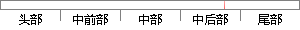

执行中断处理前，首先需要保存任务现场，然后跳转到中断处理程序处理中断，处理完毕后，退出中断，恢复任务。
片段位置图

相似结果
相似片段：保存和恢复中断现场的指令,从而可以使中断处理非常...R15写入～个数值将使得程序跳转到该地址执行。由于...重命名之前首先需要检查两条指令之间是否存在RAW和...
| 标题 | 《超标量流水线的设计研究》 |
| 对比库 | 中国学位论文全文数据库 |
| 作者 | 郑小岳 |
| 机构 | 浙江大学 |
| 分类 | 电路与系统 |
| 年份 | 2006 |
| 相似率 | 71.43% （轻度抄袭） |
※ 片段修改建议 ※
近似词参考：- 需要：必要
- 恢复：规复
- 处理：处置 处置惩罚
- 任务：使命 义务
- 执行：履行 实行
- 程序：法式 步伐
- 中断：间断 中止 停止
- 首先：起首
- 保存：保留 留存 生存
系统自动生成语句：履行间断处置前，起首必要保留使命现场，然后跳转到间断处置法式处置间断，处置完毕后，退出间断，规复使命。
注：本片段修改建议为系统自动生成，仅供参考。